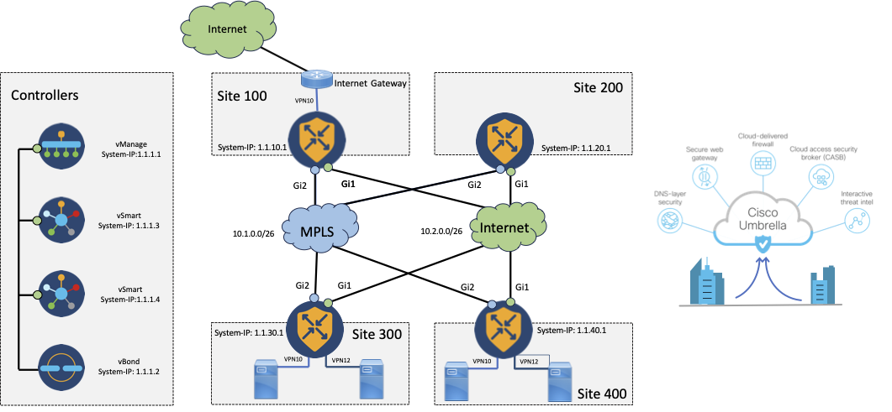

Cisco Live 2023 LTRENT-2387
Home
Topology
Connection Details and Credentials
Task 1 Remote Connection
Task 2 Devices Feature Templates
Task 3 Regional Internet Access for All Sites
Task 4 Direct Internet Access for Site300
Task 5 Umbrella (SIG) for Site300
Task 6 Umbrella Policy for Site300
Task 7 Umbrella SIG policies for Regional Access
Task 8 Umbrella Regional Policies
Task 9 Monitoring on Umbrella
Cisco Live 2023 LTRENT-2387
Topology
Edit on GitHub
Topology

GitHub
« Previous
Next »